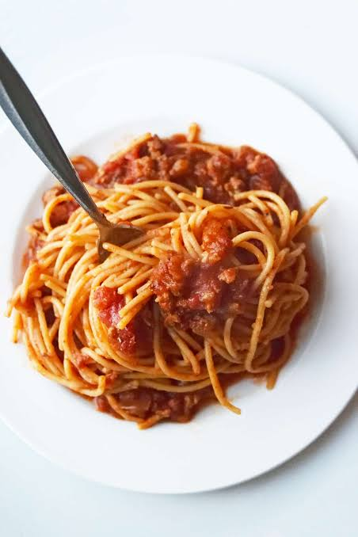

Spaghetti

Description
Spaghetti is good.
Ingredients
- 8 oz Spaghetti noodles
- 1 lb Ground beef
- 3 cloves Garlic (minced)
- 3 cups Marinara sauce
- 1 tbsp Olive oil
- Salt and black pepper (to taste)
- Parmesan cheese (for serving)
Steps
- Boil the pasta: Cook the spaghetti in a large pot of salted boiling water until al dente, then drain.
- Brown the meat: Heat olive oil in a large skillet over medium-high heat. Add the ground beef and minced garlic, cooking until browned, then drain excess fat.
- Simmer the sauce: Stir the marinara sauce into the beef, season with salt and pepper, and let it simmer for 5 to 10 minutes.
- Combine and serve: Toss the drained spaghetti with the meat sauce, and top with grated parmesan cheese before serving.
Homepage